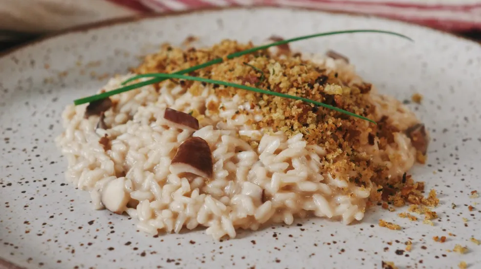

Receita de hoje: Risoto de Cogumelo

Ingredientes
- 250g Arroz arbóreo
- 100g cogumelo shiitake
- 200ml vinho branco seco
- 75g de manteiga sem sal
- 2 tabletes de caldo de legumes
- 100g de queijo parmesão
- 2 cebolas médias picadas em cubinhos
- 4 dentes de alho (opcional)
- Sal e pimenta a gosto
- Azeite de oliva (para fritar)
- Cheiro verde a gosto
Modo de preparo
-
Em um frigideira pré aquecida, coloque um fio de azeite de oliva e
refolgue os cogumelos até que estejam dourados.
- Dissolva os tabletes de caldo de legumes em uma panela com 1,5L de água quente
- Aqueça uma panela e coloque um fio de azeite de oliva
- Coloque na panela a cebola picada e o alho e frite até dourar.
- Em fogo baixo, junte o arroz na panela com a cebola e o alho e frite levemente o arroz.
- Junte o vinho na panela com arroz e vá mexendo até evaporar
- Junte 2 conchas de caldo de legumes ao arroz e mexa até evaporar.
- Repita o processo anterior até finalizar o caldo
- Junte os cogumelos refolgados ao arroz.
- Desligue o fogo e junte a manteiga e vá mexendo até o arroz ficar brilhante.
- Sirva em um prato com queijo e cheiro verde a gosto.